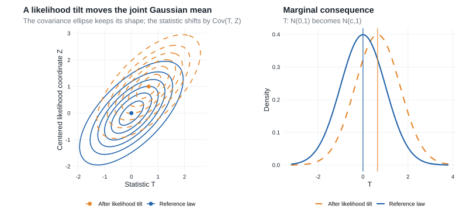

Chapter 6: Contiguity
Contiguity is asymptotic absolute continuity. It allows limiting behavior under a baseline sequence \(P_n\) to be transported to a changing sequence \(Q_n\), typically a sequence of local alternatives.
- Prerequisites: weak convergence, Portmanteau, continuous mapping, and stochastic remainders from Chapter 2.
- Purpose: determine when \(P_n\)-negligible events remain negligible under \(Q_n\), and obtain a \(Q_n\)-limit from a joint \(P_n\)-limit with the likelihood ratio.
- Chapter 25 payoff: this argument drives the regular-estimator expansion in Lemma 25.23 and the local-power bounds in §25.6, after first appearing for local alternatives in §7.5.
The reusable chain is
\[ \text{likelihood-ratio limit} \ \longrightarrow\ \text{contiguity} \ \longrightarrow\ \text{joint change of measure} \ \longrightarrow\ \text{limit under a local alternative}. \]
For a parallel development of likelihood ratios, contiguity, and Le Cam’s lemmas, see §§10.2.1–10.2.3 and §§11.1–11.2 of Bailie (2021).
- Core — §6.1 and Lemma 6.2: likelihood ratios and the decomposition needed when the two measures are not absolutely continuous.
- Core — §6.2, Lemma 6.4, and Theorem 6.6: contiguity and the abstract change-of-measure theorem.
- Core — Example 6.7: Le Cam’s third lemma and the covariance-driven shift under local alternatives.
- Compressed — Example 6.5: the lognormal likelihood-ratio limit as a diagnostic for contiguity.
- Omitted/deferred: none; both source sections are on the direct route.
6.1 Likelihood Ratios
For probability measures \(P\) and \(Q\) on the same measurable space:
- \(Q\ll P\) means that \(P(A)=0\) implies \(Q(A)=0\);
- \(Q\perp P\) means that the two measures concentrate on disjoint measurable sets.
Suppose \(P\) and \(Q\) have densities \(p\) and \(q\) with respect to a common dominating measure \(\mu\). Define
\[ (6.1)\qquad Q^a(A)=Q\{A\cap(p>0)\}, \qquad Q^\perp(A)=Q\{A\cap(p=0)\}. \]
The first measure is the part of \(Q\) visible from \(P\); the second is the part placed where \(P\) has no mass.
Lemma 6.2: Lebesgue decomposition
Let \(P\) and \(Q\) have densities \(p\) and \(q\) with respect to \(\mu\). The measures in (6.1) satisfy:
\(Q=Q^a+Q^\perp\), with \(Q^a\ll P\) and \(Q^\perp\perp P\);
for every measurable \(A\),
\[ Q^a(A)=\int_A\frac qp\,dP; \]
\(Q\ll P\) if and only if \(Q(p=0)=0\), and this is equivalent to
\[ \int\frac qp\,dP=1. \]
Proof roadmap.
Split the space into the regions \(p>0\) and \(p=0\). On the first region, substitution of \(dP=p\,d\mu\) identifies \(q/p\) as the density of \(Q^a\) with respect to \(P\). The mass of this absolutely continuous part equals one exactly when the singular part vanishes.
Complete proof
The definitions immediately give \(Q=Q^a+Q^\perp\). If \(P(A)=0\), then \(p=0\) for \(\mu\)-almost every point of \(A\), so
\[ Q^a(A)=\int_{A\cap\{p>0\}}q\,d\mu=0. \]
Thus \(Q^a\ll P\). Moreover, \(P(p=0)=0\) while \(Q^\perp\) is concentrated on \(\{p=0\}\), so \(Q^\perp\perp P\). This proves part 1.
For every measurable \(A\),
\[ Q^a(A) =\int_{A\cap\{p>0\}}q\,d\mu =\int_{A\cap\{p>0\}}\frac qp\,p\,d\mu =\int_A\frac qp\,dP, \]
where the quotient may be assigned any value on \(\{p=0\}\) because that set has \(P\)-probability zero. This proves part 2.
Finally, \(Q\ll P\) if and only if its singular part vanishes, which holds if and only if \(Q(p=0)=0\). By part 2,
\[ \int\frac qp\,dP=Q^a(\Omega)=Q(p>0)=1-Q(p=0). \]
This proves both equivalences in part 3.
Van der Vaart writes
\[ \frac{dQ}{dP}=\frac qp \qquad P\text{-almost surely} \]
even when \(Q\not\ll P\). In that case this is the density of the absolutely continuous part \(Q^a\), not of all of \(Q\). Consequently,
\[ E_P\frac{dQ}{dP}\leq1, \]
and equality holds exactly when \(Q\ll P\). The identity \(dQ=(dQ/dP)dP\) is therefore valid only under absolute continuity. Without it, for nonnegative measurable \(f\) one has only
\[ \int f\,dQ \geq\int f\frac{dQ}{dP}\,dP, \]
because the right side omits the \(Q^\perp\) contribution.
6.2 Contiguity
When \(Q\ll P\), the likelihood ratio reweights the \(P\)-law into the \(Q\)-law:
\[ E_Qf(X)=E_P\left\{f(X)\frac{dQ}{dP}\right\}. \]
Contiguity is the sequence-level condition that prevents probability mass from disappearing in the limit.
Definition 6.3: contiguity
The sequence \(Q_n\) is contiguous with respect to \(P_n\), written \(Q_n\triangleleft P_n\), if
\[ P_n(A_n)\to0 \quad\Longrightarrow\quad Q_n(A_n)\to0 \]
for every sequence of measurable events \(A_n\). The sequences are mutually contiguous, written \(P_n\triangleleft\triangleright Q_n\), if contiguity holds in both directions.
Absolute continuity is an exact statement about one pair of measures. Contiguity is an asymptotic statement about sequences, and it does not require their total-variation distance to vanish.
Lemma 6.4: Le Cam’s first lemma
Let \(P_n\) and \(Q_n\) be probability measures on measurable spaces \((\Omega_n,\mathcal A_n)\). The following statements are equivalent:
\(Q_n\triangleleft P_n\).
If, along a subsequence,
\[ \frac{dP_n}{dQ_n}\overset{Q_n}{\rightsquigarrow}U, \]
then \(P(U>0)=1\).
If, along a subsequence,
\[ \frac{dQ_n}{dP_n}\overset{P_n}{\rightsquigarrow}V, \]
then \(EV=1\).
For every sequence of statistics \(T_n\), \(T_n\overset{P_n}\to0\) implies \(T_n\overset{Q_n}\to0\).
Proof roadmap.
Statements 1 and 4 are the same eventwise condition written for indicator statistics. Contiguity rules out limiting mass at zero for the inverse likelihood ratio. Conversely, a mean-one limit for the forward likelihood ratio prevents \(Q_n\)-mass from hiding on \(P_n\)-negligible events. A bounded likelihood ratio relative to the midpoint measure \((P_n+Q_n)/2\) links the two likelihood-ratio characterizations.
Complete proof
(1) \(\Leftrightarrow\) (4). If \(T_n\overset{P_n}\to0\), apply contiguity to \(A_n=\{\|T_n\|>\epsilon\}\) for each \(\epsilon>0\). Conversely, given events \(A_n\) with \(P_n(A_n)\to0\), use \(T_n=\mathbf 1_{A_n}\).
(1) \(\Rightarrow\) (2). Work along a subsequence on which
\[ L_n=\frac{dP_n}{dQ_n}\overset{Q_n}{\rightsquigarrow}U. \]
Choose \(\epsilon_n\downarrow0\) sufficiently slowly that
\[ Q_n(L_n\leq\epsilon_n)\to P(U=0); \]
such a diagonal choice follows from weak convergence at continuity points of the law of \(U\). Because the part of \(P_n\) on which \(L_n=0\) has probability zero,
\[ P_n(L_n\leq\epsilon_n) =\int_{\{0<L_n\leq\epsilon_n\}}L_n\,dQ_n \leq\epsilon_n. \]
Contiguity makes \(Q_n(L_n\leq\epsilon_n)\to0\). Hence \(P(U=0)=0\).
(3) \(\Rightarrow\) (1). Suppose \(P_n(A_n)\to0\). Along any subsequence, pass to a further subsequence on which
\[ \left(\frac{dQ_n}{dP_n},\mathbf 1_{A_n^c}\right) \overset{P_n}{\rightsquigarrow}(V,1). \]
The likelihood ratios are tight under \(P_n\) because their expectations are at most one. By the likelihood-ratio inequality and Portmanteau,
\[ \liminf_n Q_n(A_n^c) \geq \liminf_nE_{P_n}\left\{\mathbf 1_{A_n^c}\frac{dQ_n}{dP_n}\right\} \geq EV=1. \]
Thus \(Q_n(A_n)\to0\). Since every subsequence has a further subsequence with this conclusion, it holds for the full sequence.
(2) \(\Rightarrow\) (3). Set \(\mu_n=(P_n+Q_n)/2\) and
\[ W_n=\frac{dP_n}{d\mu_n}, \qquad \frac{dQ_n}{d\mu_n}=2-W_n. \]
The variables \(W_n\) lie in \([0,2]\). Along any subsequence under consideration, pass to a further subsequence for which \(W_n\rightsquigarrow W\) under \(\mu_n\). Boundedness gives \(EW=1\). Under \(Q_n\) and \(P_n\), respectively, the relevant ratios are the transformations
\[ \frac{dP_n}{dQ_n}=\frac{W_n}{2-W_n}, \qquad \frac{dQ_n}{dP_n}=\frac{2-W_n}{W_n}, \]
with the endpoint conventions dictated by the absolutely continuous parts. Bounded continuous approximation at the endpoints and monotone convergence identify the corresponding limits \(U\) and \(V\) and give
\[ P(U=0)=2P(W=0), \]
and
\[ EV =E\{(2-W)\mathbf 1_{\{W>0\}}\} =1-2P(W=0). \]
Therefore \(P(U=0)+EV=1\). Statement 2 makes the first term zero, so \(EV=1\), proving statement 3.
In applications, condition 3 usually establishes contiguity from a likelihood-ratio limit, and condition 4 then transfers \(o_{P_n}(1)\) remainders to \(o_{Q_n}(1)\) remainders.
Example 6.5: asymptotic lognormality
Suppose that, under \(Q_n\),
\[ \frac{dP_n}{dQ_n}\overset{Q_n}{\rightsquigarrow}e^{N(\mu,\sigma^2)}. \]
The limit is strictly positive, so Lemma 6.4 gives \(Q_n\triangleleft P_n\). The sequences are mutually contiguous exactly when
\[ Ee^{N(\mu,\sigma^2)} =e^{\mu+\sigma^2/2}=1, \]
or \(\mu=-\sigma^2/2\). This mean-equals-minus-one-half-variance form recurs in LAN likelihood ratios.
Theorem 6.6: abstract change of measure
Suppose \(Q_n\triangleleft P_n\) and, under \(P_n\),
\[ \left(X_n,\frac{dQ_n}{dP_n}\right) \overset{P_n}{\rightsquigarrow}(X,V). \]
Then
\[ L(B)=E\{\mathbf 1_B(X)V\} \]
defines a probability measure, and \(X_n\overset{Q_n}{\rightsquigarrow}L\).
Proof roadmap.
Le Cam’s first lemma supplies \(EV=1\), so weighting by \(V\) defines a probability measure. The finite-sample likelihood-ratio inequality and Portmanteau then give the nonnegative-test-function characterization of weak convergence under \(Q_n\).
Complete proof
Because every likelihood ratio is nonnegative, its weak limit satisfies \(V\geq0\). Contiguity and Lemma 6.4 give \(EV=1\). Hence \(B\mapsto E\{\mathbf 1_B(X)V\}\) is a probability measure.
For every nonnegative continuous \(f\), the likelihood-ratio inequality from §6.1 gives
\[ E_{Q_n}f(X_n) \geq E_{P_n}\left\{f(X_n)\frac{dQ_n}{dP_n}\right\}. \]
The map \((x,v)\mapsto f(x)v\) is nonnegative and continuous. Portmanteau applied to the assumed joint convergence therefore yields
\[ \liminf_nE_{Q_n}f(X_n) \geq E\{f(X)V\} =\int f\,dL. \]
The nonnegative-continuous-function characterization in Lemma 2.2, now applied in the converse direction, gives \(X_n\overset{Q_n}{\rightsquigarrow}L\).
The theorem reduces a change of asymptotic law to a joint limit under the baseline measure. The weighting variable \(V\) is the limiting likelihood ratio.
Example 6.7: Le Cam’s third lemma
Suppose that, under \(P_n\),
\[ \left(X_n,\log\frac{dQ_n}{dP_n}\right) \overset{P_n}{\rightsquigarrow} N_{k+1}\left( \begin{pmatrix}\mu\\-\frac12\sigma^2\end{pmatrix}, \begin{pmatrix}\Sigma&\tau\\\tau^T&\sigma^2\end{pmatrix} \right). \]
Then, under \(Q_n\),
\[ X_n\overset{Q_n}{\rightsquigarrow}N_k(\mu+\tau,\Sigma). \]
Proof roadmap.
Exponentiate the Gaussian log-likelihood-ratio limit, use Le Cam’s first lemma to establish contiguity, and apply Theorem 6.6. The characteristic function of the exponentially tilted joint normal identifies the new mean \(\mu+\tau\) and unchanged covariance \(\Sigma\).
Complete proof
Write the limiting vector as \((X,W)\). By continuous mapping,
\[ \left(X_n,\frac{dQ_n}{dP_n}\right) \overset{P_n}{\rightsquigarrow}(X,e^W), \qquad W\sim N(-\sigma^2/2,\sigma^2). \]
Because \(Ee^W=1\), Lemma 6.4 gives \(Q_n\triangleleft P_n\). Because \(e^W>0\) almost surely, the reverse likelihood-ratio condition in the same lemma also gives \(P_n\triangleleft Q_n\).
Theorem 6.6 says that the limiting characteristic function under \(Q_n\) is
\[ E\exp(i t^TX)e^W. \]
For the stated joint normal law, evaluate its moment-generating function at the complex vector \((it,1)\):
\[ \begin{aligned} E\exp(i t^TX+W) &=\exp\left\{ i t^T\mu-\frac12\sigma^2 +\frac12\left(-t^T\Sigma t+2it^T\tau+\sigma^2\right) \right\}\\ &=\exp\left\{it^T(\mu+\tau)-\frac12t^T\Sigma t\right\}. \end{aligned} \]
This is the characteristic function of \(N_k(\mu+\tau,\Sigma)\).
The cross-covariance \(\tau=\operatorname{Cov}(X,W)\) determines the mean shift under the alternative. Exponential tilting changes the center but not the covariance, as Figure Figure 6.1 illustrates.

Normal location under a local alternative
Let \(P_n\) be the joint law of \(n\) independent \(N(0,1)\) observations and \(Q_n\) the joint law of \(n\) independent \(N(h/\sqrt n,1)\) observations, for fixed \(h\in\mathbb R\). Set
\[ Z_n=\sqrt n\,\overline X_n. \]
The log likelihood ratio is exact:
\[ \begin{aligned} \log\frac{dQ_n}{dP_n} &=\sum_{i=1}^n\left\{-\frac12(X_i-h/\sqrt n)^2+\frac12X_i^2\right\}\\ &=hZ_n-\frac12h^2. \end{aligned} \]
Under \(P_n\), \(Z_n\sim N(0,1)\) exactly. Therefore
\[ \left(Z_n,\log\frac{dQ_n}{dP_n}\right) \overset{P_n}{\rightsquigarrow} \left(Z,hZ-\frac12h^2\right), \qquad Z\sim N(0,1). \]
This is Example 6.7 with
\[ \mu=0,\qquad \Sigma=1,\qquad \sigma^2=h^2,\qquad \tau=\operatorname{Cov}(Z,hZ)=h. \]
Thus \(P_n\) and \(Q_n\) are mutually contiguous and, under \(Q_n\),
\[ Z_n\rightsquigarrow N(h,1). \]
The conclusion is also exact here: under \(Q_n\), \(\sqrt n\,\overline X_n\) has mean \(h\) and variance one for every \(n\). The calculation isolates the general mechanism used after LAN in §7.5: a local parameter shift becomes a covariance-driven shift in a Gaussian limit experiment.
Theorem 7.2 supplies the likelihood-ratio expansion, Example 6.5 establishes contiguity, and Example 6.7 supplies the shifted limit under \(P_{\theta+h/\sqrt n}^n\). Chapter 25 repeats this argument along a tangent direction \(g\): see Lemma 25.23 for estimation and §25.6 for testing.